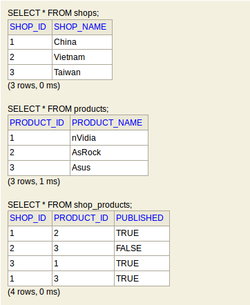
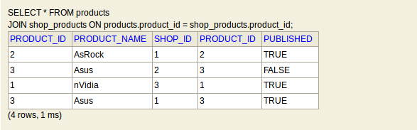

В Интернете куча статей про SQL. И про JOIN уже сказано немало. Но все равно, когда читаешь документацию или
чьи-то статьи, ничего не понятно. Т.е. вроде бы понятно, но не полностью. Особенно для таких как я, кто
знает SQL на уровне SELECT * FROM ...
В качестве СУБД, на которой будем тренироваться, возьмем H2 Database. Эта СУБД хорошо подходит для обучения, по крайней мере, ничего устанавливать не надо (нужно только иметь установленную Java). Итак, скачаем и установим H2:
cd /tmp && \ wget 'http://www.h2database.com/h2-2016-10-31.zip' && \ unzip h2-2016-10-31.zip && \ cd h2/bin/ && \ chmod a+x --verbose h2.sh
Теперь запустим СУБД:
./h2.sh
В Web-браузере откроется страница как на рисунке 1.
Здесь сразу нажимаем на Connect. После чего откроется Web-консоль, изображенная на рисунке 2, в которой можно писать запросы и выполнять их.
В качестве примера рассмотрим Интернет-магазин. Сейчас полным-полно магазинов, которые всего лишь переправляют товары из Азии в другие страны. Будем хранить сведения о поставщиках в таблице shops:
CREATE TABLE shops ( shop_id INTEGER PRIMARY KEY, shop_name VARCHAR );
Для информации о товарах заведем таблицу products.
CREATE TABLE products ( product_id INTEGER PRIMARY KEY, product_name VARCHAR );
Теперь сопоставим поставщиков и поставляемые ими товары. Отношение между поставщиками и товарами будет многие-ко-многим. Поле published отвечает за наличие/отсутствие товара у поставщика.
CREATE TABLE shop_products ( shop_id INTEGER, product_id INTEGER, published BOOLEAN, FOREIGN KEY (shop_id) REFERENCES shops(shop_id), FOREIGN KEY (product_id) REFERENCES products(product_id) );
В результате получилась структура, изображенная на рисунке 3.

Пусть у нас будет 3 магазина (т.е. 3 поставщика из Азии):
INSERT INTO shops (shop_id, shop_name) VALUES (1, 'China'); INSERT INTO shops (shop_id, shop_name) VALUES (2, 'Vietnam'); INSERT INTO shops (shop_id, shop_name) VALUES (3, 'Taiwan');
Пусть у нас в каталоге будет 3 товара.
INSERT INTO products (product_id, product_name) VALUES (1, 'nVidia'); INSERT INTO products (product_id, product_name) VALUES (2, 'AsRock'); INSERT INTO products (product_id, product_name) VALUES (3, 'Asus');
Лучше всех стараются китайцы, они производят два продукта: AsRock и Asus. В то время как Вьетнам и Тайвань - только по одному. Самый популярный продукт - Asus. Его производят в двух странах: Китай и Вьетнам (это для разнообразия, чтобы было видно, как работает JOIN).
INSERT INTO shop_products (shop_id, product_id, published) VALUES (1, 2, TRUE); INSERT INTO shop_products (shop_id, product_id, published) VALUES (2, 3, FALSE); INSERT INTO shop_products (shop_id, product_id, published) VALUES (3, 1, TRUE); INSERT INTO shop_products (shop_id, product_id, published) VALUES (1, 3, TRUE);
Данные в БД изображены на рисунке 4.

Выберем все возможные комбинации товаров (т.е. все товары всех поставщиков). Будем использовать WHERE для того, чтобы ячейки из разных таблиц не путались (SELECT не умеет сопоставлять результаты). Это рабочий подход, но он не очень наглядный. Особенно если критериев WHERE много: какой из них нужен "склеивания" данных из нескольких связанный таблиц, а какой для фильтрации данных по какому-либо полю? Как бы то ни было, результат приведен на рисунке 5.

Сделаем то же самое, что и в примере 1, только с помощью "настоящего" JOIN. В
запросе явно сказано: взять все строки из таблицы products, затем каждую строку из таблицы
products сопоставить с каждой строкой из таблицы shop_products (а именно
сопоставить поля product_id). Как видно из рисунка 6, результаты получились такими же, как и на
рисунке 5.

Этот пример - усложненная версия примера 2. Выберем все возможные товары, но только те, что есть в наличии. Работает это так:
products.
shop_products, но "склеиваем" только те строки, у которых одинаковые значения поля
product_id. На этом этапе получается таблица из 4 строк и 5 столбцов (столбец
product_id встречается в двух изначальных таблицах, но после JOIN
остается один экземпляр).
published равно TRUE.
Попробуем сделать то же самое, что и в примере 3, но без JOIN. В результаты получится таблица
из 9 строк и 6 столбцов (см. рисунок 8). Почему 9 строк? Потому что, если не задействован JOIN
(или WHERE table_a.id = table_b.id), результат будет произведением 1-ой таблицы на 2-ую (такое
произведение как-то по-умному называется, но я уже не помню, главное что в результате получатся все
сочетания без ограничений по ключам, т.е. "каждый с каждым". Работает это так:
products мы вставили 3 записи, а в таблицу shop_products -
4 записи):

published
равно TRUE.
JOIN необходим. Если в БД таблицы связаны по ключам, то без JOIN не обойтись. Впрочем, если
"наивный" запрос (т.е. заведомо ошибочный) сразу проявит себя: представьте, что таблица A связана с Таблицей B,
которая в свою очередь связана с таблицей C. Если в каждой из таблиц несколько тысяч записей, "наивный" запрос
зависнет надолго.
__________